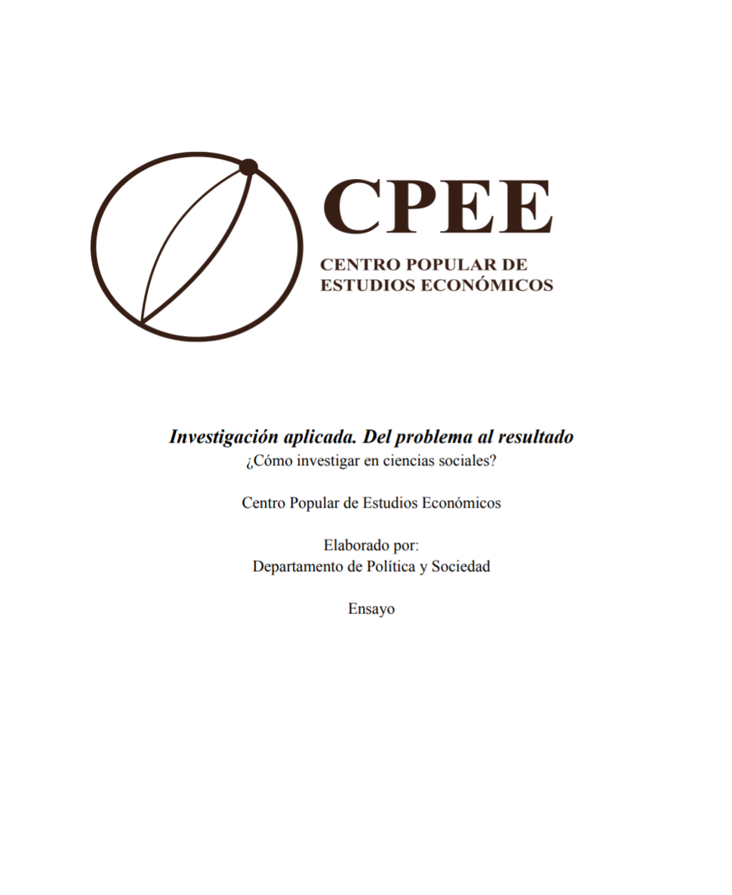

Aqui se ubican nuestros artículos, ensayos y revistas.

Autor: Departamento de Política y Sociedad
Una guía metodológica breve y directa para estructurar investigaciones en ciencias sociales. Este documento desglosa paso a paso cómo delimitar un tema, formular preguntas de investigación sólidas y analizar evidencia, demostrando que investigar es una herramienta accesible para comprender y transformar nuestra realidad a partir de datos concretos. Ademas su lectura facilitara la comprensión de nuestros futuros artículos, pues define el estándar metodológico con el que investiga el CPEE.
Leer Documento (PDF)